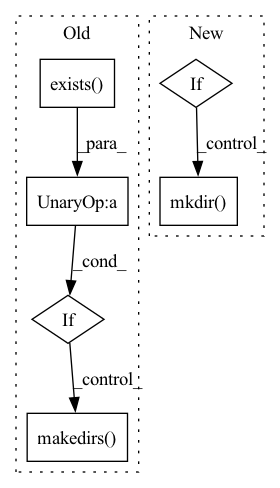

Pattern ID :42230
Before Change
frame.ParseFromString(bytearray(data.numpy()))
if archive is None:
if not os.path.exists(output_path) :
os.makedirs( output_path)
archive = zipfile.ZipFile(os.path.join(output_path, frame.context.name + ".zip"), "w")
save_timestamp(frame, idx, archive)
save_image(frame, idx, archive)After Change
frame.ParseFromString(bytearray(data.numpy()))
if archive is None:
if zip_output:
archive = zipfile.ZipFile(output_path / (frame.context.name + ".zip"), "w")
else:
archive = output_path / frame.context.name
archive.mkdir(exist_ok=True)
save_timestamp(frame, idx, archive)
save_image(frame, idx, archive)
save_point_cloud(frame, idx, archive)In pattern: SUPERPATTERN
Frequency: 3
Non-data size: 6
Instances Fragment ID: 118796900
Project Name: cmpute/d3d
Commit Name: fdf61d38e9f0cace486322e8928201f374ab8979
Time: 2020-12-13
Author: cmpute@qq.com
File Name: d3d/dataset/waymo/converter.py
M Class Name: AnonimousClass
N Class Name: AnonimousClass
M Method Name: convert_tfrecord(5)
N Method Name: convert_tfrecord(4)
M Parent Class:
N Parent Class:
M File Name: d3d/dataset/waymo/converter.py
N File Name: d3d/dataset/waymo/converter.py
M Start Line: 235
M End Line: 259
N Start Line: 247
N End Line: 275
Before Change
@pytest.fixture(scope="session")
def global_local_config():
target = os.path.join(test_data_dir, "ckpoint")
if not os.path.exists(target) :
os.makedirs( target)
config = LocalConfig(checkpoint_dir=target, input_data=test_data_dir / "data" / "smol.txt")
annotate_training_data(config)
yield config
shutil.rmtree(target)After Change
def global_local_config():
target = test_data_dir / "ckpoint"
input_data = test_data_dir / "data" / "smol.txt"
if not target.exists():
target.mkdir()
config = LocalConfig(checkpoint_dir=target, input_data=input_data)
annotate_training_data(config)
yield config
shutil.rmtree(target) Fragment ID: 118796899
Project Name: gretelai/gretel-synthetics
Commit Name: 8af17403dfa595b5dceb08e387dcaf2d80b92f29
Time: 2020-03-23
Author: zredlined@users.noreply.github.com
File Name: tests/conftest.py
M Class Name: AnonimousClass
N Class Name: AnonimousClass
M Method Name: global_local_config(0)
N Method Name: global_local_config(0)
M Parent Class:
N Parent Class:
M File Name: tests/conftest.py
N File Name: tests/conftest.py
M Start Line: 15
M End Line: 18
N Start Line: 13
N End Line: 17
Before Change
file_name = (os.path.basename(video).split(".mp4"))[0]
try:
if not os.path.exists(save_dir + file_name) :
os.makedirs( save_dir + file_name)
except OSError:
print("Error: Creating directory of data")
// Setting the frame limit to 100After Change
// os.makedirs(save_dir + file_name)
save_path = Path(save_dir).joinpath(file_name)
if not save_path.exists():
save_path.mkdir()
except OSError:
print("Error: Creating directory of data")
// Setting the frame limit to 100 Fragment ID: 118796894
Project Name: liaorongfan/deeppersonality
Commit Name: fc0e0a8ca8ebd7ce3ad206c1265dc8e586819def
Time: 2022-03-06
Author: 15670381505@163.com
File Name: dpcv/data/utils/video_to_image.py
M Class Name: AnonimousClass
N Class Name: AnonimousClass
M Method Name: frame_sample(2)
N Method Name: frame_sample(2)
M Parent Class:
N Parent Class:
M File Name: dpcv/data/utils/video_to_image.py
N File Name: dpcv/data/utils/video_to_image.py
M Start Line: 21
M End Line: 25
N Start Line: 23
N End Line: 31